Carta de temporada
La carta del Roble de Aritz
Platos pensados para compartir en el centro de la mesa, cocinados al carbón de roble. La carta cambia con la temporada; los precios incluyen IVA.
Entrantes
| Plato | Categoría | Alérgenos | Precio |
|---|---|---|---|
| Pimientos de Gernika asados | Entrante · verdura | Ninguno | 9 € |
| Txipirones a la brasa con su tinta | Entrante · marisco | Moluscos | 16 € |
| Tosta de anchoa del Cantábrico | Entrante · pescado | Gluten, pescado | 7 € |
| Ensalada templada de bacalao ahumado | Entrante · pescado | Pescado, huevo | 14 € |
| Queso idiazabal a la brasa con membrillo | Entrante · vegetariano | Lácteos, frutos secos | 12 € |
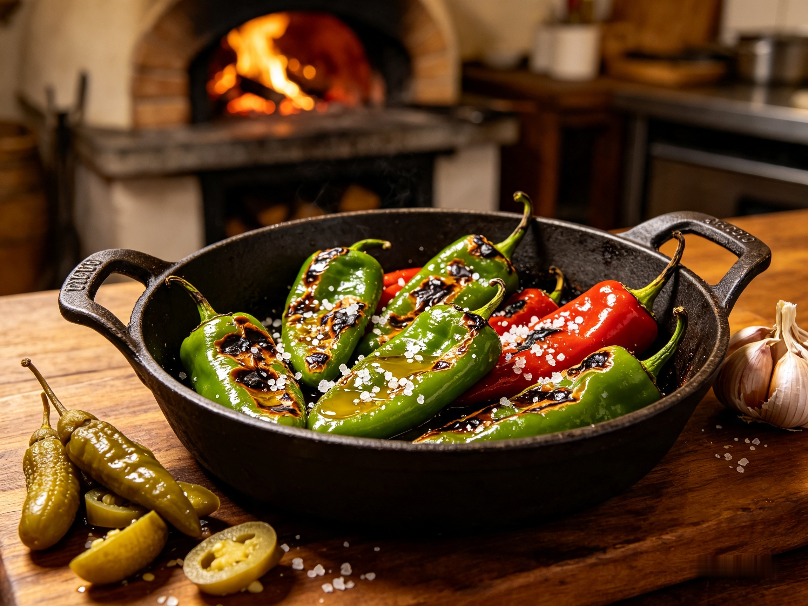
Pimientos de Gernika asados
Pimientos de Gernika seleccionados, asados al golpe de brasa
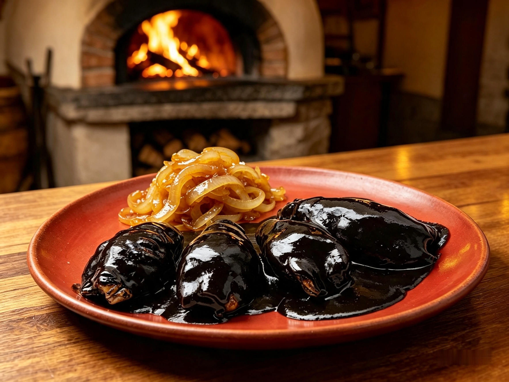
Txipirones a la brasa con su tinta
Txipirones frescos pescados a potera, marcados en la parrilla con cebolla pochada y su propia tinta tradicional.
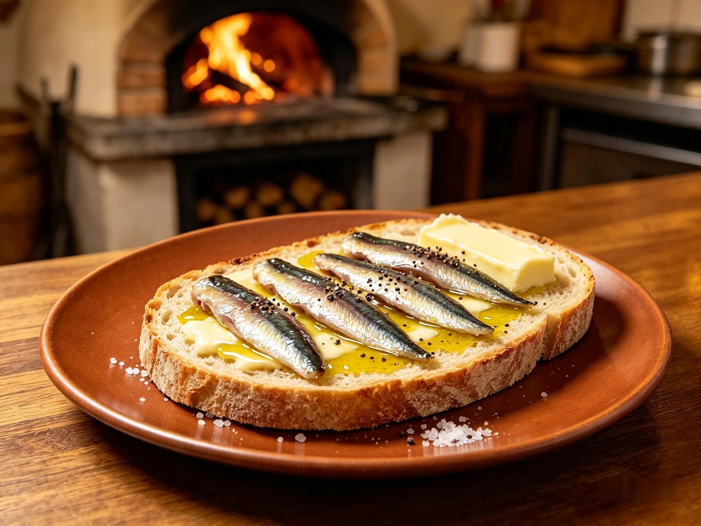
Tosta de anchoa del Cantábrico
Tosta de pan de masa madre tostado, mantequilla artesana y anchoas del Cantábrico sobadas a mano.
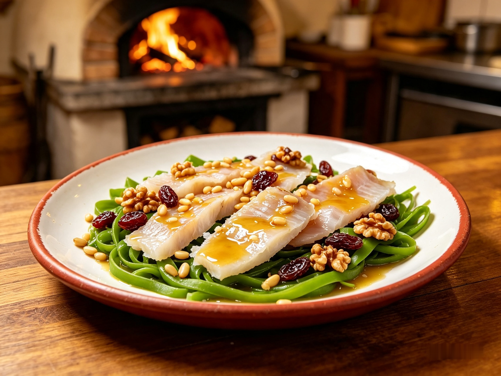
Ensalada templada de bacalao ahumado
Láminas de bacalao ahumado sobre canónigos, frutos secos y vinagreta templada de pasas y piñones.
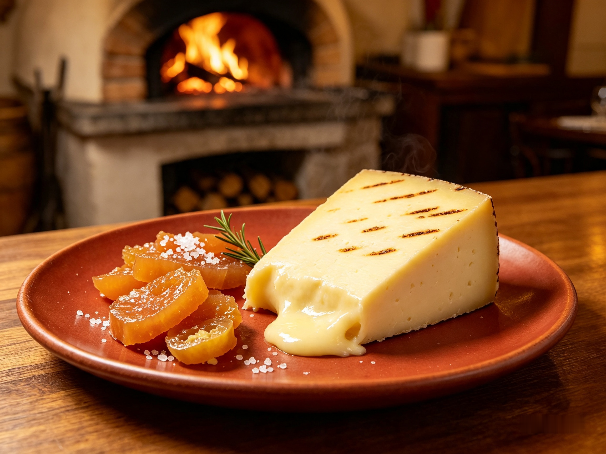
Queso idiazabal a la brasa con membrillo
Queso Idiazabal D.O. ahumado ligeramente fundido a la brasa, acompañado de dulce de membrillo casero.
Principales
| Plato | Categoría | Alérgenos | Precio |
|---|---|---|---|
| Chuletón de vaca vieja (para 2) | Principal · carne | Ninguno | 68 € |
| Rodaballo entero a la parrilla | Principal · pescado | Pescado | 42 € |
| Costilla de vacuno 12 horas al carbón | Principal · carne | Soja | 26 € |
| Arroz meloso de txangurro | Principal · marisco | Crustáceos, moluscos | 24 € |
| Alcachofas y setas de temporada a la brasa | Principal · vegetariano | Frutos secos | 19 € |
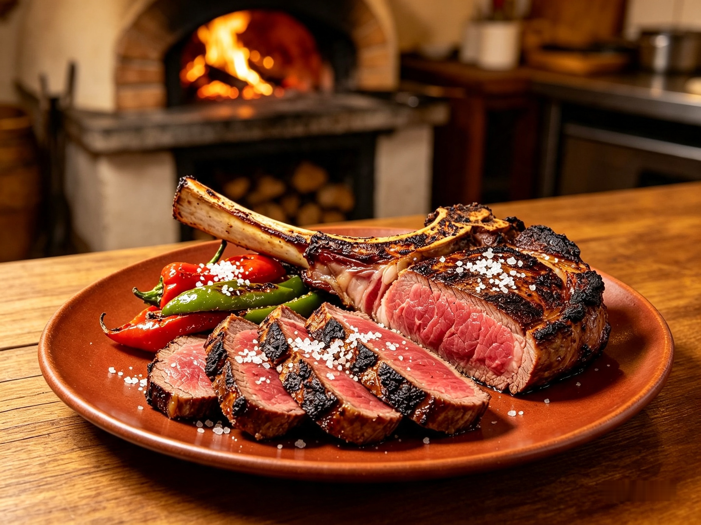
Chuletón de vaca vieja (para 2)
Corte madurado durante más de 45 días, asado a la brasa de roble en su punto óptimo y servido con patatas caseras y pimientos de padrón.
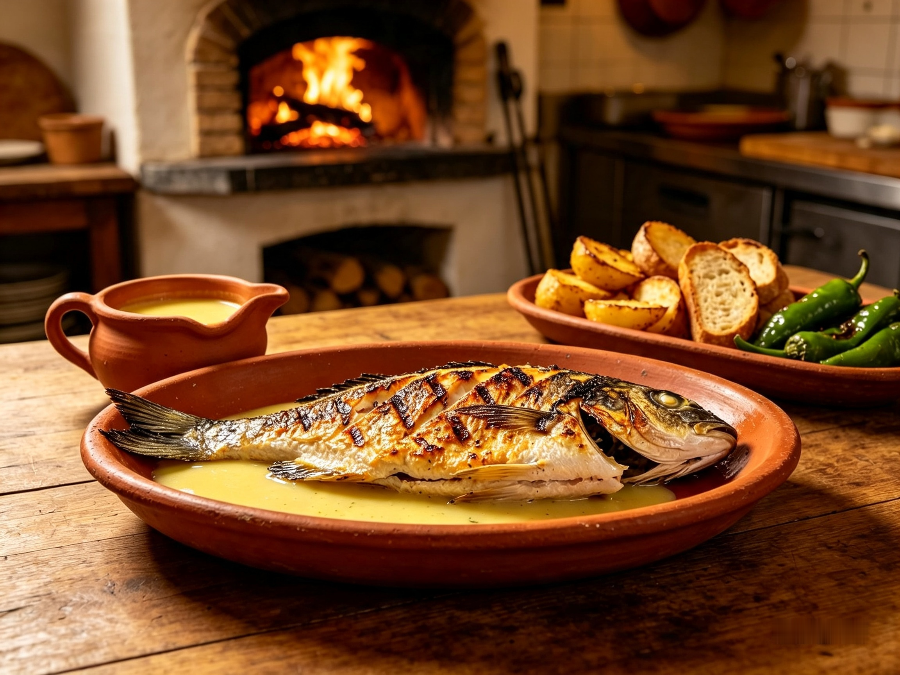
Rodaballo entero a la parrilla
Pieza entera de lonja abierta a la espalda y elaborada a la parrilla tradicional con su refrito de ajos, guindilla y vinagre de sidra.
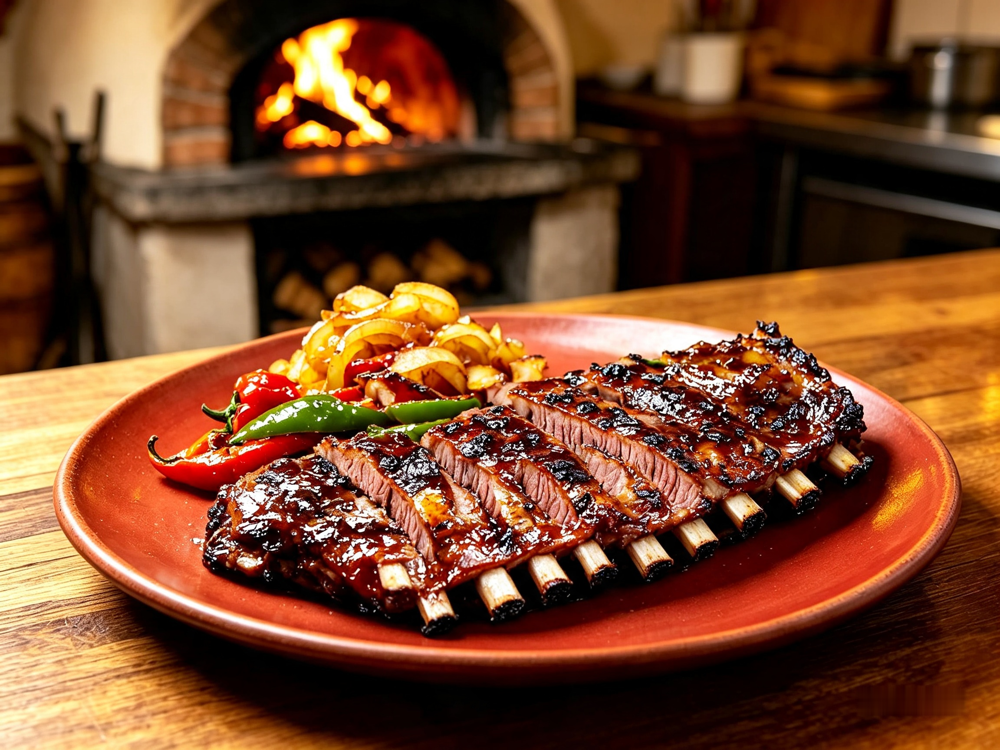
Costilla de vacuno 12 horas al carbón
Cocina lenta a baja temperatura durante 12 horas y terminada en el carbón con glaseado de su propio jugo reducido.
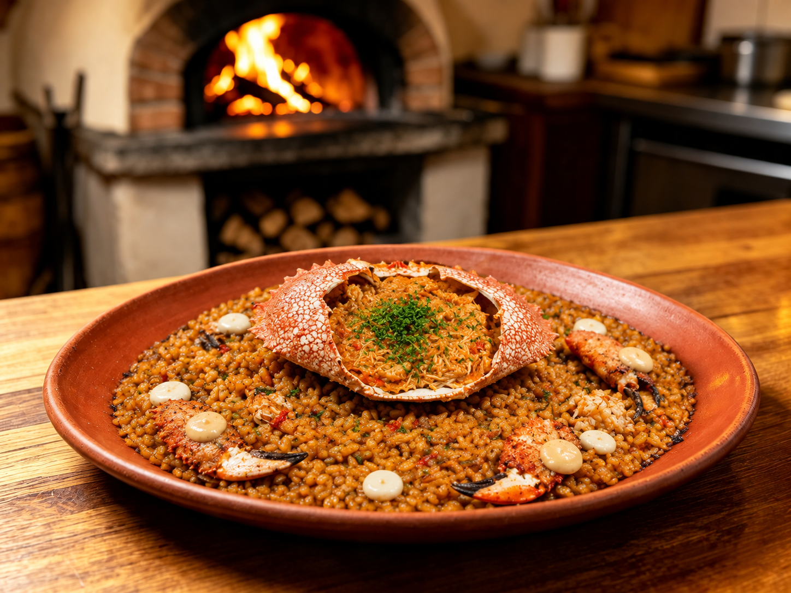
Arroz meloso de txangurro
Arroz en cazuela preparado con sofrito artesano, desmigado de centollo de pesca local y fondo concentrado de roca.
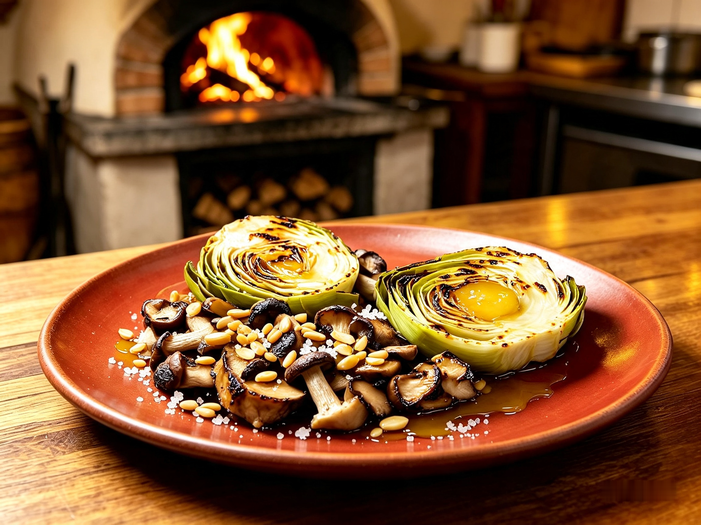
Alcachofas y setas de temporada a la brasa
Corazones de alcachofa confitados a baja temperatura con selección de setas silvestres marcadas al fuego y picada de almendra.
Postres
| Plato | Categoría | Alérgenos | Precio |
|---|---|---|---|
| Cuajada de oveja con miel de brezo | Postre · lácteo | Lácteos | 8 € |
| Torrija a la brasa con helado de canela | Postre · horno | Gluten, huevo, lácteos | 9 € |
| Tarta de queso ahumada | Postre · lácteo | Lácteos, huevo | 8 € |
| Piña asada con ron y helado de coco | Postre · fruta | Frutos secos | 9 € |
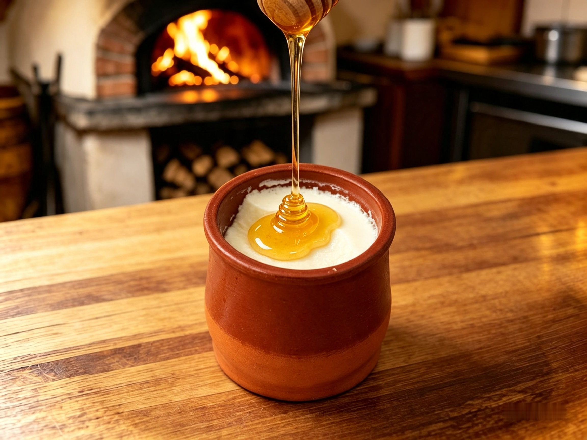
Cuajada de oveja con miel de brezo
Cuajada artesanal de leche de oveja latxa acompañada con miel pura de brezo.

Torrija a la brasa con helado de canela
Pan brioche infusionado en leche caramelizada, pasado por la brasa y acompañado de helado de canela.
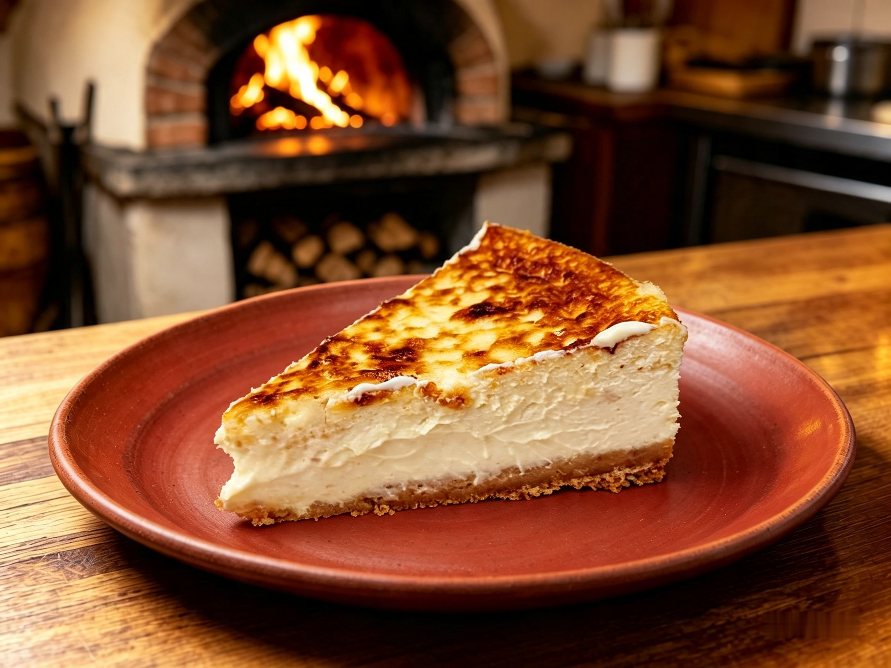
Tarta de queso ahumada
Tarta de queso horneada con un sutil toque de humo al carbón de roble y base crujiente.
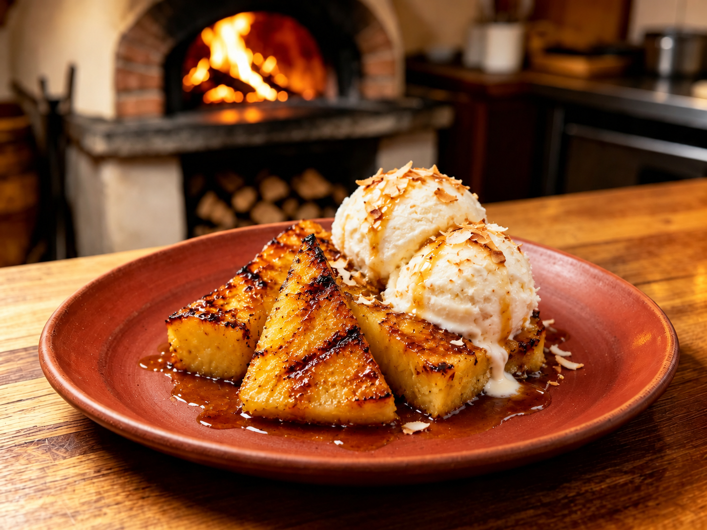
Piña asada con ron y helado de coco
Piña natural caramelizada a la brasa con ron añejo y helado artesano de coco.